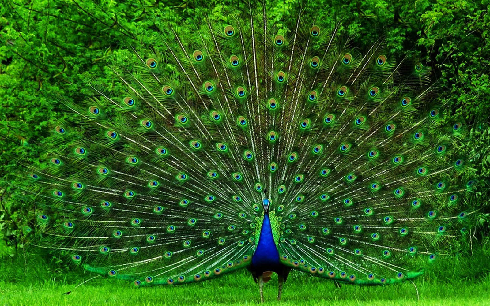

Indian Peacock: The Living Jewel of India's Cultural and Natural Legacy
The Indian peacock (Pavo cristatus), India's national bird, is a living jewel of its cultural and natural legacy. This magnificent bird, a member of the pheasant family, is an ancient emblem of beauty, pride, and spiritual significance that has been revered for thousands of years.
Taxonomy and Scientific Classification
The Indian peacock's scientific name, Pavo cristatus, translates to "crested peacock," a nod to the distinctive fan-like crest on its head. The genus name Pavo has a rich etymology, originating from the Latin word for peacock, which can be traced back through Greek and ancient Persian, showing how the bird’s fame spread across ancient trade routes.
Scientific Classification
Scientific Name: Pavo cristatus
Family: Phasianidae (Pheasants, Partridges, and allies)
Order: Galliformes
Kingdom: Animalia
The Peacock's Enduring Legacy
Scroll down to explore the peacock's evolutionary journey, its profound cultural significance, and the challenges it faces today.
Their Story - Origin, History & Historical Significance
Evolutionary Journey: The Indian peafowl belongs to the ancient family Phasianidae, which evolved during the Oligocene epoch approximately 30 million years ago. These magnificent birds developed their elaborate plumage through sexual selection, where females chose males with the most impressive displays, leading to the evolution of increasingly spectacular tail feathers over millions of years. Scientific Discovery and Classification: The Indian peafowl was formally described in 1758 by the Swedish naturalist Carl Linnaeus in the tenth edition of his Systema Naturae under its current binomial name Pavo cristatus. The genus name Pavo is Latin for "peacock," which came from the Greek word taos derived from Persian tavus, reflecting the ancient trade routes through which these birds were known across civilizations. Cultural and Historical Significance: The peacock holds an unparalleled position in Indian culture, spirituality, and history. No other bird is as deeply woven into the fabric of Indian civilization as the peacock. Religious and Mythological Importance: National Bird Status: Declared India's National Bird in 1963, symbolizing grace, beauty, joy, and love Hindu Tradition: Sacred to Lord Krishna, often depicted with peacock feathers in his crown Vehicle of Goddess Saraswati: The peacock is the vahana (vehicle) of the goddess of knowledge and arts Kartikeya's Mount: Lord Murugan (Kartikeya) rides a peacock, symbolizing the victory of good over evil Lakshmi's Symbol: Associated with Goddess Lakshmi, representing prosperity and good fortune Ancient Texts and Literature: Vedic Period: Referenced in ancient Sanskrit texts as "Mayura" and "Shikhi" Ramayana and Mahabharata: Featured prominently in epic literature Classical Poetry: Celebrated by poets like Kalidasa in works like "Meghaduta" Buddhist Texts: Symbol of compassion and watchfulness in Buddhist traditions Historical Timeline: 3000 BCE: Earliest artistic depictions in Indus Valley Civilization 1500 BCE: First references in Vedic literature 500 BCE: Featured in Buddhist Jataka tales 1st Century CE: Mentioned in Tamil Sangam literature Medieval Period: Integral to Mughal art and architecture 1758: Scientific description by Carl Linnaeus 1963: Designated as India's National Bird Cultural Legacy and Symbolism Throughout Indian history, the peacock has represented: Monsoon Herald: Their calls traditionally signal the arrival of monsoon rains Royal Symbol: Used in Mughal architecture, Mysore Palace, and countless royal emblems Artistic Inspiration: Featured in classical dance forms like Bharatanatyam and Kathak Literary Metaphor: Symbol of beauty, pride, and divine grace in poetry and literature Folk Traditions: Central to countless folk tales, songs, and festivals across India International Recognition: Ancient Greece: Peacocks were sacred to Hera, queen of gods Roman Empire: Symbol of immortality and resurrection Christianity: Represented eternal life in early Christian art Chinese Culture: Symbol of dignity and beauty Persian Art: Featured in carpets and miniature paintings
Cultural and Historical Relevance
National Symbol: Declared India’s National Bird in 1963, the Indian Peacock embodies grace, beauty, joy, and pride. In Religion and Mythology: Lord Krishna: Adorns a peacock feather in his crown, symbolizing beauty and divine love. Goddess Saraswati: Rides a peacock, representing the fusion of wisdom and beauty. Lord Kartikeya (Murugan): His mount, the peacock, is a symbol of valor and victory. Goddess Lakshmi: The bird is associated with prosperity and good fortune. Buddhism: Represents compassion and vigilance in various Buddhist texts and temples. Ancient Texts and Artistic Legacy: Vedic Literature: Called "Mayura" and "Shikhi," celebrated as a celestial bird. Epics: Referenced in the Ramayana and Mahabharata. Sanskrit Poetry: Glorified in Kalidasa’s Meghaduta. Buddhist Jataka Tales: Used as metaphors of spiritual watchfulness and grace. Sangam Era: Featured in 1st-century Tamil classical literature. Historical Timeline: 3000 BCE: First artistic depictions in the Indus Valley Civilization. 500 BCE: Mentioned in Buddhist literature. Medieval Era: Extensively featured in Mughal court art and architecture. 1758: Taxonomically classified by Linnaeus. 1963: Officially designated as the National Bird of India. Cultural and International Symbolism: India: Seen in temple carvings, folk songs, palace motifs, and dance forms (e.g., Bharatanatyam). Greece & Rome: Sacred to Hera and a symbol of immortality. Christianity: Represents resurrection and eternal life in early art. Persia & China: Emblem of dignity, immortality, and prosperity.
Threats and Poaching Incidents
Current Conservation Status: The Indian peafowl is classified as Least Concern by the IUCN. However, poaching of peacocks for their meat and feathers and accidental poisoning by feeding on pesticide treated seeds are known threats to wild birds. Poaching Reality and Methods: Despite being India's National Bird and protected under the Wildlife Protection Act, peacocks face significant poaching pressure: Illegal Trade Patterns: They are hunted for feathers, fat and meat. Though the transport, transfer and trade in the peacock tail feathers are exempted, the incidents of high mortality in some areas denote poaching. Males are generally captured from the wild for their attractive feathers, thereby affecting their population. Certain tribes use body parts of peafowl to consume as food. Peafowl ashes are used as medicines that are assumed to cure asthma. Modern Poaching Methods: There are reports from some parts of the country of poachers poisoning peafowl by mixing powerful pesticides into waterholes frequented by the birds. Recent Incidents: In January 2021, the residents of Gurgaon reported incidents of peacock poaching in the Aravalli Biodiversity Park. Several metal traps were found in the park that were set to capture these birds for their feathers. Contemporary Threats and Challenges: Illegal Commercial Trade: While collecting naturally shed feathers for these is right, poaching peacocks to acquire them is unlawful and unethical. Moreover, in certain Indian regions, peacocks are hunted down for their meat, oil and other body parts for traditional medicines or to be marketed as exotic products. Major Threat Categories: Feather Trade: High demand for decorative purposes in fashion and tourism industry Traditional Medicine: Body parts used in folk remedies despite lack of scientific basis Meat Consumption: Illegal hunting for food in certain regions Habitat Loss: Agricultural expansion and urbanization reducing suitable habitat Pesticide Poisoning: Accidental deaths from consuming contaminated food/water Human-Wildlife Conflict: Crop damage leading to retaliatory killing Regional Vulnerability: Northern Plains: High poaching pressure due to feather trade Western Rajasthan: Habitat fragmentation affecting breeding Central India: Increasing human-wildlife conflict incidents Southern States: Pesticide use in agriculture causing mortality Legal Protection Status: The Indian Peafowl is protected as a Schedule I species under the Wildlife Protection Act, 1972, making hunting, killing, or trading in peacocks punishable with imprisonment up to 7 years and fines up to ₹25,000.
Conservation Timeline (Sanctuary Perspective)
Bharatiya Mayur Sanrakshan Kendra (Indian Peacock Conservation Centre) - Established 2017 2017 - Foundation and Vision: Conservation center established in Rajasthan with focus on peacock rehabilitation Initial rescue facility created for 25 peacocks with natural habitat simulation First major rescue: 12 peacocks from illegal feather trade bust in Jaipur 2018 - Community Engagement Launch: "Mayur Mitra" (Peacock Friends) program launched in 35 villages Educational awareness campaigns reached 8,000 school children First successful breeding season: 18 chicks from 6 breeding pairs Traditional healers' education program to discourage use of peacock parts 2019 - Research and Monitoring: GPS tracking study initiated on 15 released peacocks Community-based nest protection program established First documentation of urban peacock adaptation strategies 2020 - Pandemic Challenges and Adaptation: COVID-19 lockdown increased human-peacock conflicts in urban areas Emergency rescue protocols for distressed urban peacocks Virtual education programs reached 15,000 students nationwide 2021 - Anti-Poaching Intensification: Response to Gurgaon poaching incidents with enhanced surveillance 2022 - Habitat Restoration Focus: Large-scale habitat restoration project covering 1,200 acres Native plant species cultivation program for peacock food sources Water body restoration and creation of 25 artificial watering holes Organic farming promotion in 20 villages to reduce pesticide impact 2023 - Technology Integration: AI-powered monitoring system for early poaching detection Mobile app launched for citizen reporting of peacock distress Genetic diversity assessment of captive and wild populations International collaboration with peafowl conservation networks 2024 - Expansion and Partnerships: Opened satellite centers in Gujarat and Madhya Pradesh Corporate partnership program generating ₹8 million for conservation Successfully treated 127 peacocks for various ailments and injuries First cross-state translocation program for genetic diversity The peacock's journey from ancient symbol to modern conservation icon reflects India's commitment to preserving our natural and cultural heritage. Every rescued peacock carries forward thousands of years of reverence, art, and spiritual significance that define our civilization.
Cultural and Historical Significance in India
The peacock holds an unparalleled position in Indian culture, spirituality, and history. No other bird is as deeply woven into the fabric of Indian civilization as the peacock. It is India's National Bird, declared in 1963, symbolizing grace, beauty, joy, and love. It is sacred to Lord Krishna, often depicted with peacock feathers in his crown, and is the vehicle of Goddess Saraswati, representing wisdom and arts. Lord Murugan (Kartikeya) rides a peacock, symbolizing the victory of good over evil. Historically, it has been featured in ancient texts like the Vedas, Ramayana, and Mahabharata, and has been integral to Mughal art and architecture.
Threat Categories
30% Feather Trade
20% Meat & Fat
10% Ashes & Body Parts
20% Habitat Loss
10% Pesticide Poisoning
10% Retaliatory Killings
Sanctuary Population (2025)
31% Breeding Adults
21% Young Adults
40% Juveniles
8% Under Treatment + Non-releasable
Conservation Impact
63% Successfully Released
30% Community & Habitat Impact
7% Legal & Other Support
Bharatiya Mayur Sanrakshan Kendra Timeline
2017
Conservation center established. First major rescue of 12 peacocks from illegal feather trade.
2018
"Mayur Mitra" program launched in 35 villages. First successful breeding season with 18 chicks.
2019
GPS tracking initiated on 15 released peacocks. Community-based nest protection program established.
2020
Emergency rescue protocols for distressed urban peacocks during COVID-19 lockdown.
2021
Enhanced surveillance and camera trap network installed in response to poaching incidents.
2022
Large-scale habitat restoration project covering 1,200 acres. Organic farming promotion in 20 villages.
2023
AI-powered monitoring system for early poaching detection. Mobile app launched for citizen reporting.
2024
Satellite centers opened in Gujarat and Madhya Pradesh. Corporate partnership program generated ₹8 million.
2025
State-of-the-art veterinary facility launched. Real-time monitoring of 89 GPS-collared peacocks across three states.